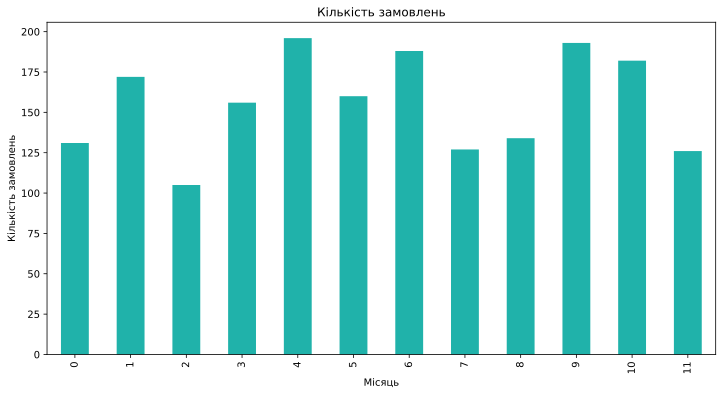
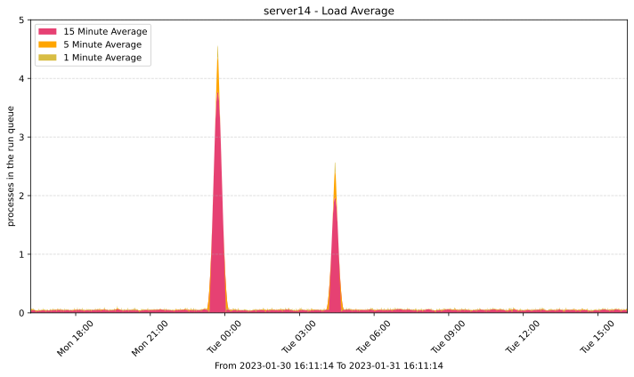
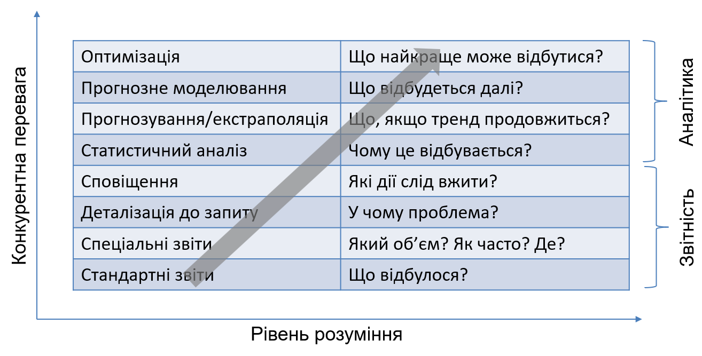
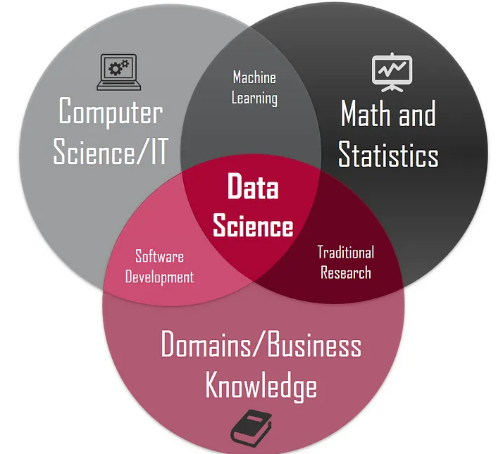
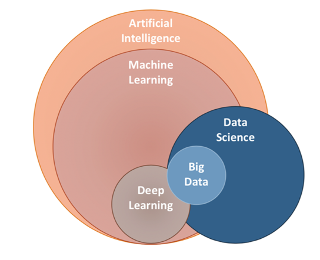
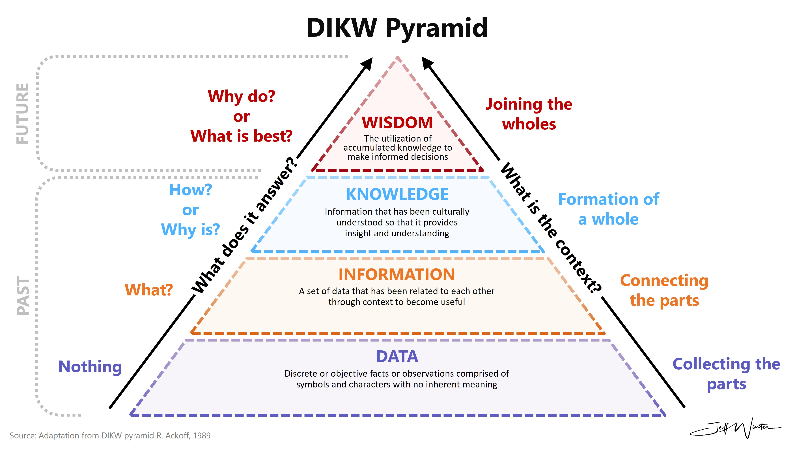

Вступ до аналізу даних
Математика для керівника
Ігор Мірошниченко
Міжнародний інститут бізнесу
Про мене
- Мірошниченко Ігор Вікторович
- кандидат економічних наук, доцент
- викладач Київської школи економіки
- доцент кафедри технологій управління, КНУ імені Тараса Шевченка
- доцент кафедри математичного моделювання та статистики, КНЕУ
Про мене

Аналітика та бізнес
Навіщо бізнесу аналітика?
Проста відповідь
Чи потрібен бізнесу прибуток?
- У 2023 році UBER показала найбільші збитки за весь час: -$3,3 млрд
- Вартість UBER $150 млрд
Чи потрібен бізнесу прибуток?
- Потенційний прибуток важливіший поточного прибутку (в IT)*
- Головне – продукт і доля ринку
*Burn rate — це швидкість, з якою компанія витрачає свої грошові резерви для фінансування поточної діяльності до отримання позитивного грошового потоку. Іншими словами, це показник негативного грошового потоку.
Чи потрібен бізнесу прибуток?
- Інколи компанія залучає аналітику, яка не пов’язана з користю для компанії.
- Компанія просто хоче стати «модною», «сучасною», «технологічною» тощо.
- Чи є там аналітика?
Звідки гроші?
Простий сценарій:
- Клієнт = користувач
- залучення
- утримання
- монетизація
- Клієнт = рекламодавець
- якість продукту
- охоплення продукту
- ефективність реклами
Шукаємо аналітику
- Трафік покупає маркетолог
- Інтерфейс малює дизайнер
- Функції додає розробник
- Партнерів шукає менеджер з розвитку бізнесу
- Продає менеджер з продажів
Шукаємо аналітику
- Трафік покупає маркетолог
- Інтерфейс малює дизайнер
- Функції додає розробник
- Партнерів шукає менеджер з розвитку бізнесу
- Продає менеджер з продажів
- Який трафік покупати? Скільки?
- Який інтерфейс малювати?
- Які функції додавати?
- Яких партнерів підключати?
- Що продавати і кому?
Як вирішуються питання?
З погляду співробітників…
Як вирішуються питання?
З погляду аналітики…
Як приймаються рішення?
Що таке аналітика?
- Ціль аналітики — допомогти прийняти правильне рішення
- Аналітика = консультація
- Дані, статистика і програми — засоби для досягнення цілей.
- Аналітика продумує логіку рішення задачі
- Якість прийнятого рішення = цінність аналітики
- Аналітика потрібна тоді, коли її вклад дозволяє приймати рішення краще
- Аналітики мають розуміти до якої цілі рухається бізнес
- Якщо результат аналізу даних не донесено до бізнесу — аналіз даних був марний
Вступ до аналізу даних
Процес роботи з даними

Концепція корпоративної культури на основі даних
В компанії повинен здійснюватися збір даних
Доступ до даних: дані мають бути загальнодоступними.
- Дані можуть бути об’єднані
- Дані можна використовувати спільно
- Доступні за запитом
Корпоративна культура на основі даних
- Звітність

- Сповіщення

Від звітності до аналізу
Звітність — процес організації даних в інформаційному вигляді, для того щоб відобразити, як функціонує бізнес.
Аналіз — перетворення даних у висновки, на основі котрих будуть прийматися рішення і здійснюватися дії за допомогою людей, процесів і технологій.
| Звіт | Аналіз |
|---|---|
| Описовий | Дає рекомендації |
| Що? | Чому? |
| Ретроспективний | Перспективний |
| Піднімає питання | Відповідає на питання |
| Дані -> інформація | Дані + інформація -> висновок |
| Звіти, дашборди, сповіщення | Спостереження, рекомендації, прогнози |
| Відсутній контекст | Контекст + історія |
Критерії управління на основі даних
- Компанія проводить різноманітні тестування, наприклад А/В-тестування
- Тестування напрямлені на постійне вдосконалення діяльності компанії та їх співробітників
- Компанії займаються прогнозами, моделюванням тощо
- Подальші дії обирають на підґрунті набору зважених показників
Бізнес-інформація та аналітика
Thomas H. Davenport nad Jeanne G. Harris “Competing on Analytics”
Основні напрямки роботи з даними
Класифікація та оцінка ймовірності
🏷️Спосіб дати для кожного спостереження мітку, яке покаже до якого класу воно належить.
- Ціна акції завтра буде вище або нижче?
- Є сенс продавати страховий поліс цьому клієнта?
- «Серед усіх клієнтів, які з більшою ймовірністю зреагують на пропозицію?»
Регресія
📈 Оцінка числового значення для кожного спостереження.
- «Як часто клієнт користується послугою? Від чого це залежить?”
- Якою ціна акції буде завтра?
- Оцінити тривалість “життя” клієнта.
Інші задачі
- Визначення подібності
- «Які з цих клієнтів схожі? Які з цих товарів схожі? Які з цих документів схожі?»
- Кластеризація
- «Які з цих клієнтів належать до одного сегменту?»
- Асоціація
- «Які з цих товарів купують разом? Які з цих документів пов’язані між собою?»
Інші задачі
- Профілювання
- «Як часто клієнти користуються нашим товаром?»
- Прогнозування зв’язків
- «У Вас 10 спільних друзів, можливо, Ви хотіли б додати когось в друзі?»
- Семплінг
- Заміна великого обсягу даних меншою, за умови збереження важливої інформації.
- Причинно-наслідковий аналіз
- «Чи справді таргетована реклама впливає на обсяг продажів?»
Приклад: таксі NYC
- Дата і час початку поїздки (активації лічильника).
- Дата і час завершення поїздки (вимкнення лічильника).
- Кількість пасажирів у транспортному засобі. Це значення вводиться водієм.
- Пройдена відстань у милях, зафіксована лічильником.
- Довгота місця початку поїздки.
- Широта місця початку поїздки.
- Довгота місця завершення поїздки.
- Широта місця завершення поїздки.
- Код, що вказує спосіб оплати пасажиром. Можливі значення: кредитна картка, готівка, без оплати, спірне, невідомо, анульована поїздка.
- Вартість поїздки, розрахована за часом і відстанню лічильником.
- Сума чайових – автоматично заповнюється для кредитних карток. Готівкові чайові не враховуються.
- Загальна сума всіх платних доріг під час поїздки.
- Загальна сума, стягнута з пасажира. Не включає готівкові чайові.
Приклад: таксі NYC
- Які питання можна поставити?
- Як змінюється заробіток водія вночі і вдень?
- Чим відрізняється їх маршрут?
- На скільки швидкість руху менше в годину пік?
- Куди їдуть клієнти в різний час доби?
- Які водії отримують більше чайових? Від чого це залежить?
Спеціалісти з аналітики
- Інженери у області обробки даних і аналізу
- Бізнес-аналітики
- Data scientists
- Статистики
- Фахівці з економічного аналізу і фінансові аналітики
- Фахівці з візуалізації даних
- …
Спеціалісти з аналітики
Навички
- Аналітичний склад думок
- Увага до деталей і методичність
- Раціональний скептицизм
- Впевненість в собі
- Зацікавленість
- Навички спілкування і оповідання
- Терпіння
- Любов до даних
- Прагматизм та діловий підхід
- Прагнення вчитися
Термінологія навколо Data Science
Аналіз даних
Інформація vs. дані
Види даних
- Кількісні (числові) дані
- Дискретні (цілі числа)
- Безперервні (дійсні числа)
- Якісні (категоріальні) дані
- Номінальні (без порядку)
- Порядкові (з порядком)
Вибірка та генеральна сукупність
- Всі дані, що стосуються проблеми — «генеральна сукупність».
- Використана частина генеральної сукупності — «вибірка».
- Репрезентативність вибірки залежить від способу її формування.
- Збільшення вибірки найчастіше сприяє більшій точності оцінок.
Вибірка та генеральна сукупність
ПРИКЛАД 1:
Ви працюєте помічником глави компанії, яка володіє великою кількістю роздрібних магазинів по всій країні. Глава компанії просить надати йому деяку актуальну інформацію про щотижневі оборотах магазинів.
Генеральна сукупність — весь щотижневий оборот, всіх роздрібних магазинів.
Вибірка — певне число щотижневих показників (100 або 1000).
Помилка вибірки — невідповідність показників вибірки до генеральної сукупності
Формування вибірки
- Проста випадкова вибірка
Кожен елемент генеральної сукупності має рівні шанси бути обраним.
- Стратифікована випадкова вибірка
Генеральна сукупність ділиться на групи і вибірка формується шляхом випадкової вибірки всередині кожної страти.
Формування вибірки
ПРИКЛАД 2. Стратифікована випадкова вибірка:
Агентство з дослідження ринку досліджує ставлення дорослого населення міста до певного продукту. Його клієнти зацікавлені тільки в розбивці за статтю та віком (старше 35 років).
Формування вибірки
Кластерна вибірка — вибірка на основі певної характеристики.
Систематична вибірка — вибірка кожного \(n\)-го елемента генеральної сукупності.
Квотна вибірка — невипадкова стратифікована вибірка:
347 жінок, 35 + 163 жінок, до 35 333 чоловіків, 35 + 157 чоловіків, до 35
Джерела даних
Основні типи:
- Дані зібрані всередині організації (фінансові звіти, рахунки, кадрові записи тощо)
- Бізнес-дані, отримані із зовнішніх джерел (результати опитувань, фінансової преси та аналогічних джерел).
- Дані зібрані державою
Анкетування
Основні рекомендації:
- Не ставте неоднозначних питань.
- Не використовуйте навідні запитання.
- Не ставте питань, які потребують технічних знань або використовують складний словниковий запас.
- Дайте короткий, простий список можливих відповідей, якщо можете.
- Помістіть особисті або важкі питання в кінці анкети.
- Не ставте питань, які занадто сильно залежать від пам’яті.
- Намагайтеся уникати відкритих питань.
Контакти з респондентами
Інтерв’ю
➕ Високий рівень відповідей
➕ Точність відповідей
➖ Час і гроші
➖ Підготовка та неупередженість інтерв’юера
➖ Неготовність респондентів
➖ Обмеження часу на обдумування
Контакти з респондентами
Роздача анкет
➕ Конфіденційність респондента
➕ Час на обдумування
➕ Низька вірогідність упередженості інтерв’юера
➖ Час і гроші
➖ Неякісне заповнення анкет
Дякую за увагу!

Математика для керівника